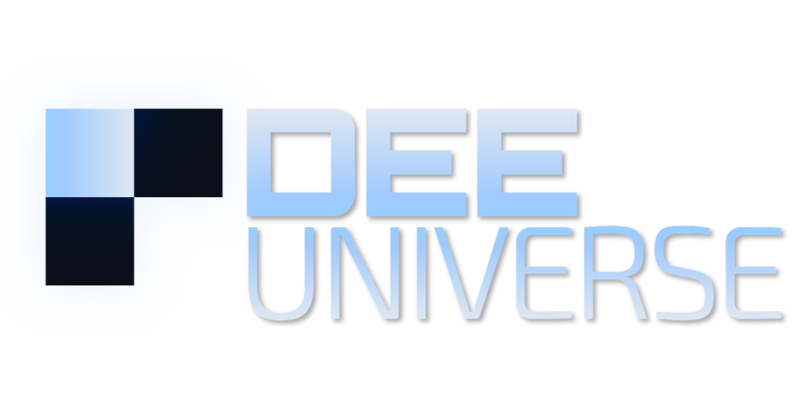

A 3D space
The DEE laboratory is a finite three-dimensional lattice of discrete positions.

DEE is a three-dimensional cellular automaton with internal state. Each position reads its local surroundings and all positions evolve step by step under the same dynamics. The project studies what organizations, forms of processing and effective physical descriptions can arise from that evolution.
This site separates internal DEE results, mathematical constructions and hypotheses of correspondence with our universe. Understanding the mechanism comes before assigning physical meaning.
DEE does not begin by inserting particles, memory or known physical equations. It begins with positions, local state and an evolution rule.
The DEE laboratory is a finite three-dimensional lattice of discrete positions.
A position stores internal information. A binary occupied/empty image does not represent the full microstate.
Each update uses information from the position itself and its immediate surroundings. No central controller writes the global result.
The same dynamics is applied repeatedly. Repetition produces the complete history of the system.
Memory, learning and physics are not presented as isolated labels. The causal chain helps show how they can arise within a single dynamics.
A configuration can translate in defined sectors.
Two configurations can meet and alter the later state.
Part of a transformation can persist or regenerate.
The past can change a present response.
Later inputs can be transformed according to state produced earlier.
An observer can retain only variables sufficient to describe a regime.
These families summarize capabilities demonstrated or formalized within identified domains. Quantitative detail belongs in the documentation and reproducible evidence.
Prepared sectors show local transport and interaction outcomes that depend on present conditions and destination.
Operational identity can persist even when specific positions or registers supporting it change.
DEE probes and readers can create records about a target–interaction–readout relation; no isolated field is declared a universal observer by name.
History can persist in phases, relations or distributed landscapes and change later responses.
Controlled domains demonstrate learned relations, held-out queries, composition, functional transfer and reprogramming.
States created by different histories can transform later perturbations differently, even when partial readings look equivalent.
DEE v27 uses an explicit taxonomy so an analogy cannot become a demonstration merely through wording.
Negative results, controls that overturn previous interpretations and measurement corrections are preserved as well. When an older reading is superseded, the genealogy remains and the current interpretation is updated.
An operation in the v27 source.
A consequence proved from explicit premises.
A measurement with identified apparatus, horizon and controls.
A mathematical development under declared reduction conditions.
The additional question of whether a DEE structure also represents a phenomenon in our universe.
In DEE, “processing” does not mean visual resemblance to a brain. It means a causal transformation of inputs, states or responses. “Learning” is used when an experimental relation exists among training, the state produced and a future response.
An interaction prepares an internal change.
That change can retain a relation or alter accessibility.
A later query encounters a different present.
The future response changes reproducibly within the domain.
VISUAL 04 · Reused with caution. Simplified interaction visualization; not a direct capture, not evidence of external physical equivalence, and not a complete representation of v27 processing.
DEE physics is constructed after studying native dynamics. A mathematical representation can be exact within a sector and still not demonstrate that our universe uses the same substrate.
v27 rule, causality, transport, interaction, observation, history, information and recurrence.
Unitarity, Schrödinger, composition/entanglement, effective relativity, metric, phase, thermodynamics and hydrodynamics under explicit premises.
Identifying effective variables with external physical quantities and phenomena requires calibration, prediction and independent validation.
DEE makes questions about identity, observation, information and emergence concrete because there is an explicit dynamics on which to formulate them.
What makes an organization remain “the same” when its components change?
How much information must an observer preserve to predict a future correctly?
Can a continuous law be an effective description of discrete dynamics?
How do we distinguish correlation, memory and an effective quantum relation?
The home page explains the basis. Documentation then deepens progressively. Materials sufficient to reconstruct proprietary implementation are managed separately.
Origin, position/cell, tick, transport example and transition toward effective sectors.
Request documentMemory, learning, composition, functional transfer, reprogramming, recurrence and distributed history.
Request documentMicrodynamics, observers, information, and development of quantum, relativistic, geometric, thermal and collective sectors.
Request documentDEE changed because controls and engineering required it to change. V27 is the current canonical reference; earlier stages retain genealogical value when they explain what was corrected.
Collaboration routes are ordered by scientific value before commercial value.
Re-run suites, introduce new controls and verify claims inside their domains.
Mathematical analysis, observers, continuum limits, complex systems, seminars, theses and interdisciplinary review.
Represent real problems and compare performance, robustness and cost against conventional methods.
State whether your interest is replication, theory, academia, technology, technical access, investment or licensing. For science, include the question or claim you want to examine.
info@dee-universe.comPublic documentation explains the framework. Source code, reconstructive rule sets, internal sequences, proprietary constants and sensitive configurations remain under controlled access. Contact is covered by the Privacy notice.